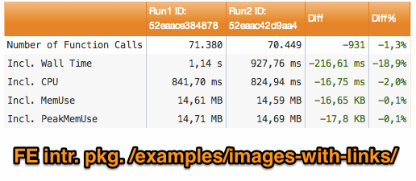
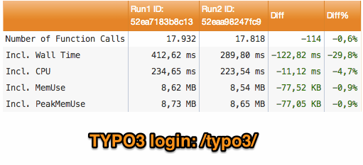
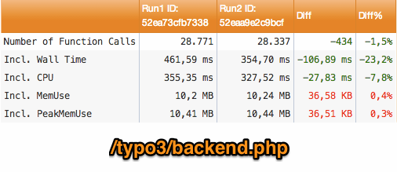
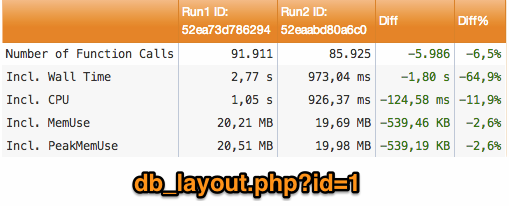
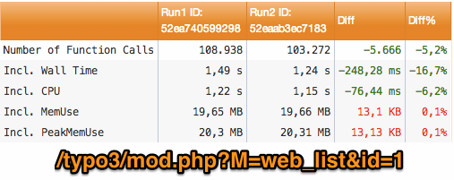

Task #54517
Replace substr() and strpos() with GeneralUtility::isFirstPartOfString when it makes sense
| Status: | Accepted | Start date: | 2013-12-19 | |
|---|---|---|---|---|
| Priority: | Must have | Due date: | ||
| Assigned To: | Jo Hasenau | % Done: | 0% |
|
| Category: | Performance | Spent time: | - | |
| Target version: | 7.5 | |||
| TYPO3 Version: | 6.2 | Complexity: | ||
| PHP Version: | 5.3 | Sprint Focus: |
Description
There a few hundred calls to strpos or substr with different parameters set, but they actually check wether a certain string is the first part of another string.
Since we got GeneralUtility::isFirstPartOfString for this task, any occurence of strpos and or substr should be replaced with that, unless it checks for another position than 0.
Additionally we should get rid of the 0 offset of the isFirstPartOfString method itself, since it decreases performance as well and is just superfluous for this task.
FE-images-with-links.png - FE-images-with-links (42.5 kB)
{kind=link}
BE-login.png - Backend login screen (38.1 kB)
{kind=link}
db_layout_php_id_1.png - db_layout?id=1 (38.3 kB)
{kind=link}
typo3_backend_php.png - /typo3/backend.php (37.3 kB)
{kind=link}
typo3-mod.php_M-web_list_id_1.png - mod.php?M=web_list&id=1 (39.3 kB)
{kind=link}
Array_Access___strpos.patch
 (129.6 kB)
(129.6 kB)
isFirstPartOfStr.patch
(146.3 kB)
Related issues
History
#1 Updated by Jo Hasenau over 1 year ago
Additionally it might be useful to introduce another method "isLastPartOfString" (that might use "isFirstPartOfString"), since there are lots of substr calls with negative values as well.
But that depends on the performance impact of the solution, since it won't work with strpos (or maybe strrpos) but will need at least another function to determine the length of the string to search for, so after all there might be no good alternatives for substr with individual parameters.
#2 Updated by Michiel Roos over 1 year ago
Also, as part of this patch, all occurences of substr($someString, n, 1) should be replaced with $someString{n-1}.
#3 Updated by Gerrit Code Review over 1 year ago
- Status changed from New to Under Review
Patch set 1 for branch master of project Packages/TYPO3.CMS has been pushed to the review server.
It is available at https://review.typo3.org/26732
#4 Updated by Michiel Roos over 1 year ago
And then there are also cases where it is tested if there is a string of lenght 'n' starting at position 'm' in a string. So to follow Jo's suggestion, we would then also need a GeneralUtility::isAtPositionInString(). Or something similarly named.
This add complexity to the already crowded GeneralUtility.
Since most of the substr calls currently check against a string, I propose to convert those to plain strpos calls. This will avoid calling a method that calls a function and does additional unneeded checks (in a comparison case) and unneeded casting to string.
There are 232 such substr calls that compare against a string. Many of them are in critical areas like: LanguageService->sL(). Those methods should be as fast as possible. Let's not introduce any overhead there by using GeneralUtility::isFirstPartOfString().
Of these 232 calls, many are of the form substr($blah, 0, 1) === 'x'. These must first be replaced by 'array access': http://forge.typo3.org/issues/55445
Also, existing calls to isFirstPartOfString (only 5 of them, but four are in the \TYPO3\CMS\Core\TypoScript\Parser\TypoScriptParser::checkIncludeLines()) that check against a single character to be at the end of a string must be converted to the array access form.
Find them: /isFirstPartOfStr\([^,]+,\s(?:'[^']'|"[^"])\)/
The remaining calls (about 148 of them) should be converted to strpos:
Find them: /substr\s*\(([^,]*)\s*,\s*(\d+)\s*,\s*\d+\s*\)\s((?:!|=)==?)\s('[^']*'|"[^"]")/
Replace them: strpos($1, $4) $3 $2
#5 Updated by Jo Hasenau over 1 year ago
Actually this was my personal favorite too, since I just created this task on demand.
Claus Due and me already discussed that in the chat and came to the same conclusions.
Helmut Hummel joined the discussion though and suggested to stay with isFirstPartOfString due to readability and better possibilities for testing.
Steffen Ritter agreed to the fact that a simple strpos() and/or array access should not be wrapped within an additional method call but prominently explained in the CGL instead.
- It's much faster
- It uses less memory, since strings don't have to be copied to the method
- readability is still quite good
- It's not easy to test changes without a specific method
Especially the memory aspect should be taken into account here as well, since the strings we are checking in TYPO3 6+ are much longer than the ones in TYPO3 4.x, due to the introduction of name spacing and other readability improvements.
#6 Updated by Helmut Hummel over 1 year ago
Hi Joey!
Thanks for your passion about this topic.
Jo Hasenau wrote:
Pros for the plain solution without any additional method call are:
- It's much faster
- It uses less memory, since strings don't have to be copied to the method
Since you seem to have experience with that. Can you provide numbers how much memory is saved and how much faster it gets for a "regular" frontend and/or backend request?
That could help to decide if it is worth discussing, changing, fixing it for hours if not days...
The above is no sarcasm at all. It's only my personal feeling that I'm wasting my time for minor things while not getting done the important stuff.
For this particular topic, I'm out. Please do whatever you think makes sense and is for the better of TYPO3 and our codebase.
#7 Updated by Jo Hasenau over 1 year ago
It's not about precise numbers of frontend or backend requests, but about best practise here.
Maybe Rupi has got some deeper insight, since he did a lot of profiling already.
There are 3 different ways to solve "is a string the first part of another string" depending on the context.
Each of them is the fastest solution for one of the following scenarios:
1. I know the part string or at least the length of it
substr($string, 0, 3) === '123' substr($string, 0, 3) === $part
2. I don't know the part or the length of it
$part !== '' && strpos($string, $part) === 0
3. I know the length of the part is 1 and maybe I know it's position as well
$string{0} === '1'
$string{0} === $part
$string{4} === '1'
$string{4} === $part
If we were going to throw all these solutions into one single method it would slow down the whole process, since we had to introduce some checks as well.
So the only solution to avoid that overhead would be to find the average solution that would still be quite fast for any scenario.
Currently this would be for example:
substr($string, 0, strlen($part)) === $part
Which could of course be subject for further optimization. But since this would just give us a one liner within a method, the method call does not make sense in any case, since it at least doubles the amount of memory used for that purpose, or slows down the process additionally.
IMHO GeneralUtility methods only make sense to have a common way to solve a problem which is a bit more complex than a one liner.
Otherwise it's just overengineering.
#8 Updated by Michiel Roos over 1 year ago
- File FE-images-with-links.png added
- File BE-login.png added
- File db_layout_php_id_1.png added
- File typo3_backend_php.png added
- File typo3-mod.php_M-web_list_id_1.png added
Here are some test results for the following before - after situation:
before:
All occurrences of (strpos($uid, 'NEW') (=|!)== 0) replaced with (!)\TYPO3\CMS\Core\Utility\GeneralUtility::isFirstPartOfStr()
search: strpos\s*\(([^,]*)\s*,\s([^\)]*)\)\s*(?:(!)|=)==?\s0 replace: $3\\\\TYPO3\\\\CMS\\\\Core\\\\Utility\\\\GeneralUtility::isFirstPartOfStr($1, $2)
All occurrences of (substr($this->iParts3, 0, 1) '+') replaced with (!)\TYPO3\CMS\Core\Utility\GeneralUtility::isFirstPartOfStr()
search: substr\s*\(([^,]*)\s*,\s*0\s*,\s*\d+\s*\)\s(?:(!)|=)==?\s('[^']*'|"[^"]")
replace: $2\\\\TYPO3\\\\CMS\\\\Core\\\\Utility\\\\GeneralUtility::isFirstPartOfStr($1, $3)
after:
All occurrences of substr($this->iParts3, 0, 1) = '+' replaced with $this->iParts3{0} === '+'
search: substr\s*\(([^,]*)\s*,\s*0\s*,\s*\d+\s*\)\s(?:(!)|=)==?\s('[^']*'|"[^"]")
replace: $1{$2}
All occurrences of (substr($this->iParts3, 0, 4) '++++') replaced with strpos($this->iParts[3], '++++') = 0;
search: substr\s*\(([^,]*)\s*,\s*0\s*,\s*\d+\s*\)\s(?:(!)|=)==?\s('[^']*'|"[^"]")
replace: $2\\\\TYPO3\\\\CMS\\\\Core\\\\Utility\\\\GeneralUtility::isFirstPartOfStr($1, $3)
- FE images with links (Introduction package)
 - Backend login
 - TYPO3 backend.php
 - DB layout page id 1
 - Mod web_list page id 1

#9 Updated by Michiel Roos over 1 year ago
- File Array_Access___strpos.patch added
- File isFirstPartOfStr.patch added
But people, don't take my word for it. Measure it for yourself using these patches.
#10 Updated by Claus Due over 1 year ago
Jo wrote:
IMHO GeneralUtility methods only make sense to have a common way to solve a problem which is a bit more complex than a one liner.
Otherwise it's just overengineering.
Spot on, agree 100% - but you already know that :)
The threshold LOC before a wrapper method makes sense might be somewhat arbitrary, but it's hard to disagree that one behavior which can be solved with language structures should not be solved with a wrapper method. It is, after all, why we also switched intval() to (integer) etc.
#11 Updated by Benjamin Mack 6 months ago
- Status changed from Under Review to Accepted
The proper solution here is to get rid of isFirstPartOfStr by applying the following logic:
The following 'rules' should used for the replacement:- Drop isFirstPartOfStr / StringUtility::beginsWith in favor of any occurence of
strpos(haystack, needle) === 0
strpos(haystack, needle, 0) === 0 - Drop isFirstPartOfStr / StringUtility::beginsWith in favor of any occurence of
substr(haystack, 0, strlen(needle)) === needle - Use variable{x} for any occurence of
substr(string, x, 1) - Use array methods, when the string methods are simulating
an explode or check substr with the third parameter set to TRUE
#12 Updated by Benjamin Mack 6 months ago
- Target version changed from 6.2.0 to 7.5
#13 Updated by Markus Klein 6 months ago
@Benni:
I disagree: We should not get rid of those functions as they provide more functionality than a dumb strpos() call.
Regarding index of chars in strings: We should use the [x] syntax instead of {0}.
(Background: {} was introduced back some days, but was dropped again and docs say to prefer [])
#14 Updated by Jo Hasenau 6 months ago
The questions are:
Which of the current use cases really need that additional functionality?
Are there any places, where we don't know, if the provided variable is a string? - If there are cases, and if it is not possible to do a proper string conversion once before doing the check, we can still discuss how to proceed in these special cases.
So I would agree with you, that we could keep the methods, but we should avoid using them wherever possible.
They use up to 4 string conversions and 4 PHP function calls - with one of these functions being strlen() - plus the additional wrapper method call. All that just to achieve, what usually can be done with a single PHP function, maybe with one additional check.
Wherever possible means: If we know beforehand, what will then be checked again within the utility, don't use the utility but the simple PHP code. And this should be part of the coding guidelines.
#15 Updated by Markus Klein 6 months ago
Sure, simplify wherever possible!
But this is yet another instance of a cleanup which will give us headaches if we overlook that a variable is not a string. Let's have a special focus on this potential pitfall.
#16 Updated by Jo Hasenau 6 months ago
I discussed those headaches with Mattes while having a look at another performance issue and we agreed that having a lot of smaller patches will be easier to review than the huge one we had i.e. with intval() vs. (int) - so I guess we can reduce the risk of having a regression to an absolute minimum as well.